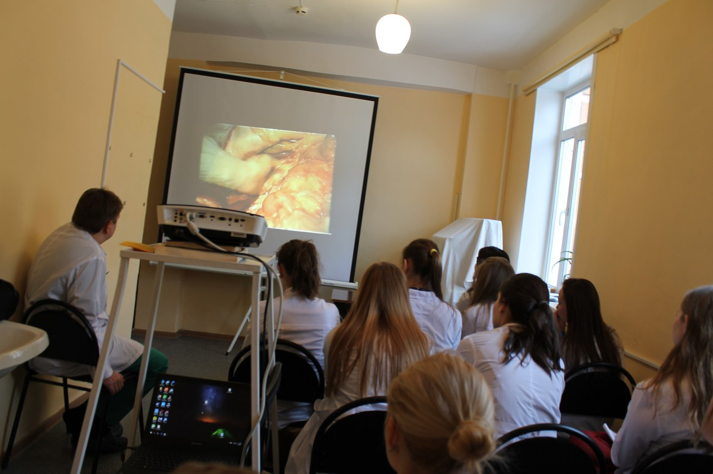
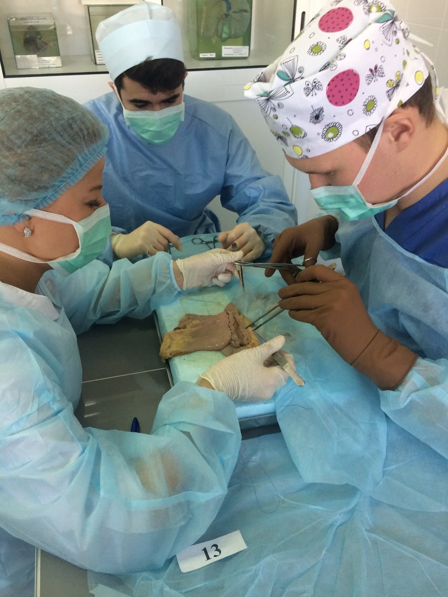
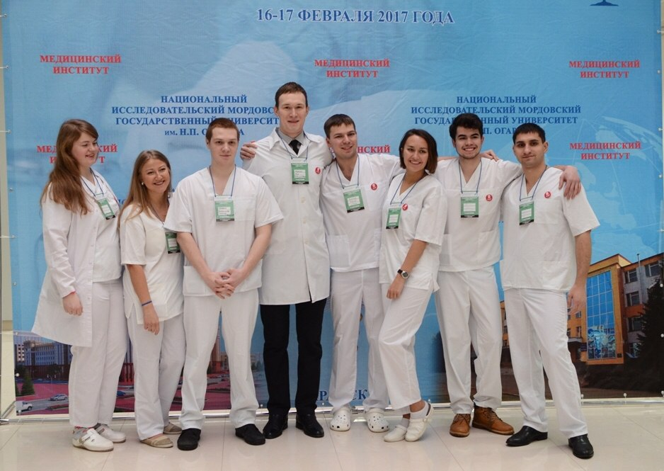
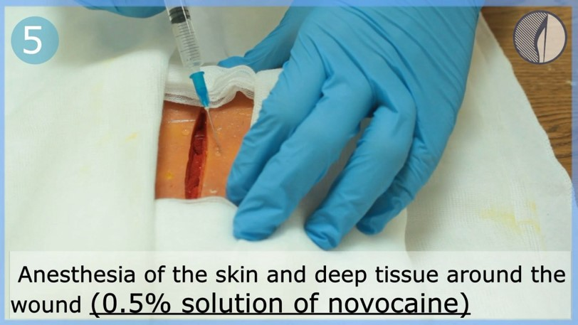

<!DOCTYPE html>
<html lang="en">
  <head>
    <meta charset="utf-8" />
    <meta name="viewport" content="width=device-width, initial-scale=1.0, maximum-scale=1.0, user-scalable=no" />

    <title>Custom Options With Frontmatter</title>
    <link rel="shortcut icon" href="./favicon.ico"/>
    <link rel="stylesheet" href="./dist/reveal.css" />
    <link rel="stylesheet" href="./dist/theme/white.css" id="theme" />
    <link rel="stylesheet" href="./css/highlight/tomorrow-night-bright.css" />

  </head>
  <body>
    <div class="reveal">
      <div class="slides"><section  data-markdown><script type="text/template">

### Современные технологии преподавания на кафедре общей хирургии №1 

к.м.н., доцент Гаврилов Василий Александрович 

проф. Самарцев В.А., проф. Зубарева Н.А., доц. Кадынцев И.В., асс. Паршаков А.А., асс. Кузнецова М.П., асс. Пушкарев Б.С.
</script></section><section  data-markdown><script type="text/template">
#### Образовательная деятельность кафедры

* 1 курс - с 2011 года - "Основы ухода за больными"
* 2 курс - "Основы сестринского дела в хирургии"
* 3 курс - "Общая хирургия"
* 1, 2, 3 курс на английском языке
* Руководство учебной и производственной практикой на всех курсах
* Ординатура
* Аспирантура
</script></section><section  data-markdown><script type="text/template">
#### Наша кафедра первая клиническая хирургическая кафедра у студентов

#### Миссия кафедры

* Создать правильное первое впечатление от лечебной работы врача в условиях современной хирургической клиники

* Сформировать мотивацию и интерес к изучению хирургии, как основного раздела клинической медицины
</script></section><section ><section data-markdown><script type="text/template">
#### Образовательные технологии кафедры общей хирургии №1

* компьютерный класс с локальной вычислительной сетью

* компьютерные задания в виде тестов и задач

* электронное тестирование

* сайт кафедры с электронными ресурсами для подготовки к занятиям
</script></section><section data-markdown><script type="text/template">
#### Образовательные технологии кафедры общей хирургии №1

* взаимодействие с обучаемыми через соцсети

* создание собственных методических рекомендаций и учебных пособий

* консультации со студентами онлайн
</script></section><section data-markdown><script type="text/template">
#### Образовательные технологии кафедры общей хирургии №1

* курсы на сайте дистанционного образования ПГМУ

* вовлечение студентов в научную деятельность кафедры

* участие студентов в лечебной работе сотрудников кафедры
</script></section></section><section  data-markdown><script type="text/template">
#### Компьютерный класс кафедры общей хирургии №1 <!-- .element: style="color:white;background-color: rgba(0,0,0,0.5)" -->

<!-- .slide: data-background="img/компкласс.jpg" -->

* 14 компьютеров <!-- .element: style="color:white;background-color: rgba(0,0,0,0.5)" -->
* локальная сеть <!-- .element: style="color:white;background-color: rgba(0,0,0,0.5)" -->
* "серверный" компьютер преподавателя <!-- .element: style="color:white;background-color: rgba(0,0,0,0.5)" -->
</script></section><section  data-markdown><script type="text/template">
#### Предпосылки для расширения применения информационно-компьютерных технологий (ИКТ) в обучении хирургии

* развитие компьютерных технологий

* расширение дистанционного образования

* развитие социальных сетей

* пандемия COVID-19
</script></section><section ><section data-markdown><script type="text/template">
#### Использование ИКТ на кафедре общей хирургии №1

* обучающие материалы в форматах текст, графика, аудио и видео

* обучение с использованием материалов сети Интернет, баз данных клинических случаев и т.д.

* расширение способов общения между обучающимися и преподавателями (соцсети, электронная почта, видеоконференции и т.д.).
</script></section><section data-markdown><script type="text/template">
#### В настоящее время с помощью компьютерного класса проводится автоматизация  учебного процесса

* создание единой базы наглядных электронных материалов, включая фото- и видеофрагменты операций, презентации, лекции сотрудников кафедры и хирургов с мировым именем

* проведение тестирований, решения ситуационных задач в рамках современной балльно-рейтинговой системы оценки знаний студентов
</script></section><section data-markdown><script type="text/template">
#### В настоящее время с помощью компьютерного класса проводится автоматизация  учебного процесса

* подготовка и проведение студенческой учебно-исследовательской и научной работы

* использование единого стандарта отработок занятий и лекций всеми преподавателями кафедры

* возможность проведения персонализированных отработок занятий по нескольким темам одновременно
</script></section></section><section  data-markdown><script type="text/template">
#### Преимущества проведения тестирования в электронном виде

* удобный, легкий и понятный студенту и преподавателю интерфейс

* возможность контролирования хода тестирования в реальном времени

* сохранение результатов для последующего легкого и быстрого доступа
</script></section><section ><section data-markdown><script type="text/template">
#### Обновленный сайт кафедры общей хирургии №1 <!-- .element: style="color:red; background-color: rgba(204,86,86,0.3)"--> 

<!-- .slide: data-background="img/сайт кафедры.png" -->

https://gensurperm.ru <!-- .element: style="color:red" -->


</script></section><section data-markdown><script type="text/template">
#### На сайте представлены электронные материалы по всем разделам преподавания на русском и английском языках <!-- .element: style="color:white;background-color: rgba(0,0,0,0.5)" -->

<!-- .slide: data-background="img/материалы.png" -->
</script></section></section><section  data-markdown><script type="text/template">
#### Сообщества кафедры общей хирургии №1 в социальных сетях <!-- .element: style="color:white;background-color: rgba(0,0,0,0.5)" -->

<!-- .slide: data-background="img/группавк1.png" -->

* официальное сообщество ВКонтакте кафедры на русском и английском языках <!-- .element: style="color:white;background-color: rgba(0,0,0,0.5)" --> https://vk.com/gensurperm <!-- .element: style="color:white;background-color: rgba(0,0,0,0.5)" -->

* сообщество ВКонтакте студенческого научного кружка <!-- .element: style="color:white;background-color: rgba(0,0,0,0.5)" --> https://vk.com/gesu_psma <!-- .element: style="color:white;background-color: rgba(0,0,0,0.5)" -->
</script></section><section ><section data-markdown><script type="text/template">
#### Сайт дистанционного образования ПГМУ им. академика Е.А. Вагнера <!-- .element: style="color:white;background-color: rgba(11,10,70,0.7)" -->

<!-- .slide: data-background="img/сдо.png" -->
</script></section><section data-markdown><script type="text/template">
#### Сайт дистанционного образования ПГМУ им. академика Е.А. Вагнера

* созданы 6 курсов для студентов на русском и английском языках

* сформированы банки тестовых вопросов по 1500+ вопросов на каждый курс

* каждая тема содержит материал в формате презентации или SCORM-курса

* проверка заданий осуществляется с помощью облачных хранилищ и генераторов форм
</script></section></section><section  data-markdown><script type="text/template">
#### Студенческие научный кружок кафедры общей хирургии №1

Цель: разностороннее развитие личности и формирование клинического мышления студента, навыка установления причинно-следственных  связей между жалобами пациента и  ассоциированной с ними клинической симптоматикой с данными лабораторных и инструментальных методов исследования, исходя из биохимических, патофизиологических и патоморфологических  изменений, характерных для данного заболевания
</script></section><section  data-markdown><script type="text/template">
#### Варианты научной работы в рамках СНК кафедры общей хирургии №1

* учебно-исследовательская работа

* исследовательская работа
</script></section><section  data-markdown><script type="text/template">
#### Учебно-исследовательская работа

Включает

* проблемный реферат

* клинический разбор с вариантом оперативного лечения
</script></section><section  data-markdown><script type="text/template">
#### Исследовательская работа

Включает

* проблемный реферат

* экспериментальная работа

* ретроспективный и проспективный анализ клинического материала
</script></section><section  data-markdown><script type="text/template">
#### Во всех вариантах работы студенты

* оценивают преимущества и недостатки различных методов визуализации

* составляют оптимальную программу инструментальной диагностики у конкретной категории больных 

* выбирают и обосновывают оптимальный метод хирургического лечения
</script></section><section  data-markdown><script type="text/template">
#### СНК кафедры подготавливает победителей федерального конкурса У.М.Н.И.К. Всего подготовлено 6 победителей  <!-- .element: style="color:white;background-color: rgba(0,0,0,0.6)" -->

<!-- .slide: data-background="img/умники.png" -->
</script></section><section  data-markdown><script type="text/template">
#### Способы представления результатов инструментальных исследований 

* Фотосъемка

* Видеосъемка

* Видеотрансляция

* DICOM-хранилища

* Интернет-порталы

Все это с учетом принципов этики и деонтологии с сохранением врачебной тайны
</script></section><section  data-markdown><script type="text/template">
#### Разбор видеозаписей реальных хирургических операций в рамках СНК


</script></section><section  data-markdown><script type="text/template">
#### Мастеркласс по технике шва в рамках СНК кафедры 


<!-- .element: style="float: left; width: 50%;" -->



<!-- .element: style="float: left; width: 50%;" -->
</script></section><section  data-markdown><script type="text/template">
#### Мастеркласс по заболеваниям опорно-двигательного аппарата в рамках СНК кафедры <!-- .element: style="color:white;background-color: rgba(0,0,0,0.5)" -->

<!-- .slide: data-background="img/сустмк.jpg" -->
</script></section><section  data-markdown><script type="text/template">
#### Активное участие резидентов СНК в Российских в конкурсах профессионального мастерства


</script></section><section ><section data-markdown><script type="text/template">
#### Активные участники СНК кафедры разрабатывают тренажеры для самостоятельной отработки хирургических навыков


<!-- .element: style="float: left; width: 25%;" -->


<!-- .element: style="float: left; width: 50%;" -->


<!-- .element: style="float: left; width: 25%;" -->
</script></section><section data-markdown><script type="text/template">
#### Тренажер для отработки навыков лапароскопической хирургии СНК кафедры <!-- .element: style="color:white;background-color: rgba(0,0,0,0.5)" -->

<!-- .slide: data-background="img/laptren.jpg" -->
</script></section></section><section  data-markdown><script type="text/template">
#### В период эпидемии COVID-19 20 апреля 2020 года впервые в ПГМУ на нашей кафедре проведен СНК в дистанционном формате в виде ZOOM-конференции с онлайн трансляцией в ВК-сообщество <!-- .element: style="color:white;background-color: rgba(0,0,0,0.5)" -->

<!-- .slide: data-background="img/snkdist.jpg" -->
</script></section><section  data-markdown><script type="text/template">
#### Запись обучающих видео на русском и английском языках участниками СНК нашей кафедры


</script></section><section ><section data-markdown><script type="text/template">
#### Онлайн-трансляции из операционной в конференц-зал ГАУЗ ПК ГКБ№4 <!-- .element: style="color:white;background-color: rgba(0,0,0,0.5)" -->

<!-- .slide: data-background="img/2018-10-09 10-04-05.jpg" -->
</script></section><section data-markdown><script type="text/template">
#### Сотрудники ГКБ№4 на заседаниях СНК знакомят студентов с новейшим хирургическим оборудованием <!-- .element: style="color:white;background-color: rgba(0,0,0,0.5)" -->

<!-- .slide: data-background="img/нейрох.jpg" -->
</script></section></section><section ><section data-markdown><script type="text/template">
#### Результат участия в работе СНК

* применение инновационных образовательных технологий активирует познавательную и поисково-творческую деятельность студента, стимулирует выработку навыков самостоятельной работы

* формируются навыки работы с источниками литературы

* знакомство с современными технологиями диагностики и лечения хирургических заболеваний
</script></section><section data-markdown><script type="text/template">
#### Навыки, приобретаемые студентом СНК

* публичного выступления 

* формирования обзоров литературы 

* создания презентаций 

* защиты результатов собственных исследований

* ведения профессиональной дискуссии
</script></section></section><section  data-markdown><script type="text/template">
#### Кафедра общей хирургии №1 ежегодно в тройке лидеров лучших СНК ПГМУ  <!-- .element: style="color:white;background-color: rgba(0,0,0,0.6)" -->

<!-- .slide: data-background="img/ярмаркасно.jpg" -->
</script></section><section  data-markdown><script type="text/template">
#### Результаты научной работы студентов СНК кафедры общей хирургии №1 ежегодно публикуются в региональных, всероссийских сборниках <!-- .element: style="color:white;background-color: rgba(0,0,0,0.6)" -->

#### Докладам присуждаются призовые места на конференциях <!-- .element: style="color:white;background-color: rgba(0,0,0,0.6)" -->

<!-- .slide: data-background="img/дипломыснк.png" -->
</script></section><section  data-markdown><script type="text/template">
## Спасибо за внимание

https://gensurperm.ru</script></section></div>
    </div>

    <script src="./dist/reveal.js"></script>

    <script src="./plugin/markdown/markdown.js"></script>
    <script src="./plugin/highlight/highlight.js"></script>
    <script src="./plugin/zoom/zoom.js"></script>
    <script src="./plugin/notes/notes.js"></script>
    <script src="./plugin/math/math.js"></script>
    <script>
      function extend() {
        var target = {};
        for (var i = 0; i < arguments.length; i++) {
          var source = arguments[i];
          for (var key in source) {
            if (source.hasOwnProperty(key)) {
              target[key] = source[key];
            }
          }
        }
        return target;
      }

      // default options to init reveal.js
      var defaultOptions = {
        controls: true,
        progress: true,
        history: true,
        center: true,
        transition: 'default', // none/fade/slide/convex/concave/zoom
        plugins: [
          RevealMarkdown,
          RevealHighlight,
          RevealZoom,
          RevealNotes,
          RevealMath
        ]
      };

      // options from URL query string
      var queryOptions = Reveal().getQueryHash() || {};

      var options = extend(defaultOptions, {"transition":"fade"}, queryOptions);
    </script>


    <script>
      Reveal.initialize(options);
    </script>
  </body>
</html>
